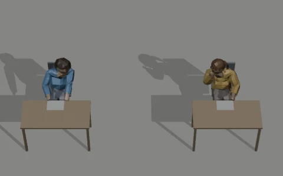
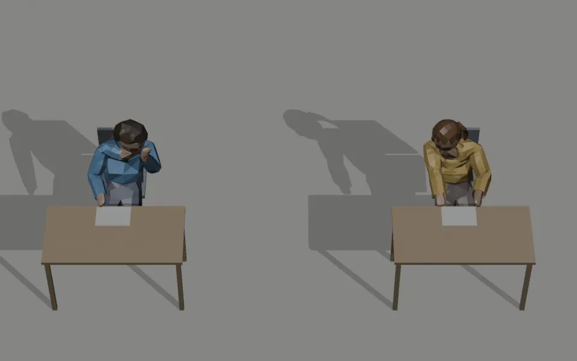
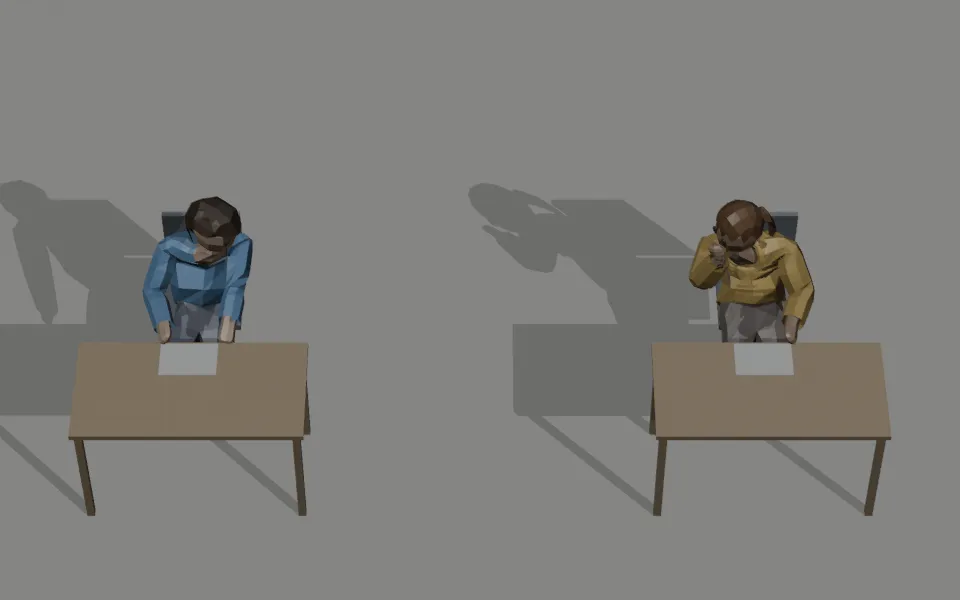
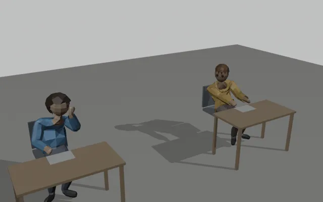
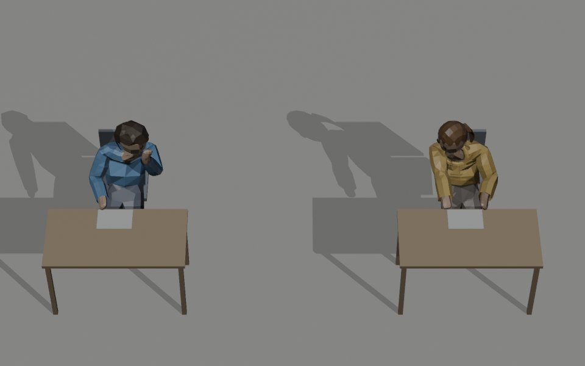

At the game's camera
The game's fixed camera: 50° down, 42° field of view, about 15 m from a middle-row seat. These loops are at the phone's own pixel size (a 1080-pixel-tall screen), so the students are as small as in the game. Each pair is shown both ways round: the right-hand clips are exact mirrors of the left-hand ones.

Enlarged
The same framing at twice the resolution, to show what is happening.


Three-quarter view
From the front corner of the room, closer, to judge the motion: hand, head, desk and chair.

The whisperer
- Body leans 16° toward the neighbour and turns 18° toward them; hips slide 5 cm along the seat.
- Face turned about 62° toward the neighbour, with the same talking nods as before (kept unchanged).
- Cupped hand at the mouth, on the side the invigilator sees, palm to the mouth.
- Other hand stays on the paper.
The listener
- Body leans 12° toward the whisperer and turns 14° toward them; hips slide 4 cm along the seat.
- Face turned about 55° toward the whisperer, head nearly level (10° down, 3° tilt).
- Two small nods (5°) per loop.
- Both hands stay on the desk.
Checked
- Nothing passes through the chair or the desk, in all four clips (checked every third frame).
- 4-second seamless loops, 30 fps.
- From the game camera the faces are a small cue: the low-detail head shows the turn as a shift of the face to one side. The raised hand and the two leans carry most of the read.
Clip names
"Left" means toward the neighbour on the student's own left, aimed +1 like today's WhisperLeft. The Right clips are exact mirrors. Not in the game yet.
The comparison: Blender against Meshy
Before the choice, each clip was made two ways: by hand in Blender (free) and with Meshy text-to-motion (paid). The pictures below are those earlier versions. The owner chose Blender, then asked for a less tilted listener and faces turned toward each other, which gave the clips above.


Blender, by hand (chosen)
- Hand clearly cupped at the mouth, on the side the invigilator sees.
- Hands stay on the desk like every other exam clip, so moving to and from writing or reading looks natural.
- Nothing passes through the chair or desk.
- Every amount is a number in a script, so changes after review are free.
- Tidier and a little mechanical up close.
Meshy, text-to-motion
- Softer, more natural body movement and a big lean.
- Hands in the lap. Fitting them to the desk failed: the body leans back, so the wrists stayed 28–35 cm short.
- It reclined through the chair back and had to be slid 12 cm forward on the seat.
- The whisperer's hand rests on the cheek, which can read as thinking.
- The first try (20 credits) barely moved; every change costs again.




The old whisper
The clip the game used before: one student sits back with the hands in the lap and turns the head a little; the neighbour keeps reading.